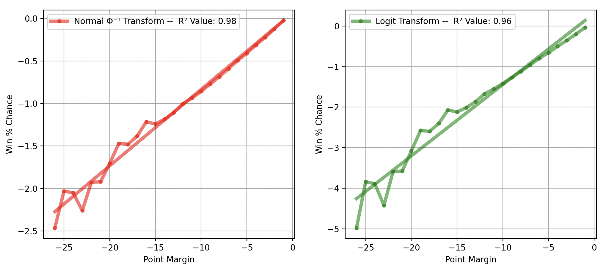

Methodology and Forming the Plot Trend Lines#
Methodology#
At its core, this is a simple dashboard – it:
Finds all the games that meet the conditions specified (comeback type, seasons, time left, team rank, etc.)
Does a simple # wins / # games calculation of the win percentages
And then fits a normal model to that data so we can see the trend in the underlying data more clearly.
This is different than other real-time probability calculators (like the one you see on a Google game summary page, the ESPN app, or what 538 put together for example). Those have very involved formulas that also consider additional factors (BPI rating, player lineups, vegas odds, etc.). Also, they are closed so it’s not clear what the input conditions are (e.g. what seasons) or what algorithm is used.
Here, the idea is not to pinpoint the exact win probability but rather is just to plot the available data based on a set of conditions in a way that allows analysis and comparison (while trying to show as much of the actual historical game data that makes up the data points as possible). The only part of the process where judgement is applied is the approach to the trend line fitting which is described below.
Trend Lines Help Reduce Statistical Noise#
The purpose of the trend lines is to fit a statistically valid model to the data. The real data will have fluctuations, especially as you reduce the number of games in whatever set you are looking at. For example, look at the points down at halftime chart for regular season and playoff games for 2017-2024 (~10k games) versus just the playoff games (~600 games).
As you can see, the smaller data set is “noisier”, but the trend lines help cut through the noise so we can compare two datasets as best we can.
How To Form The Trend Lines#
Usually, the best model is a line. However, our data is not linear with respect to probability. For example, look at the points down at halftime when plotted on a linear y-axis:
As is, this is not very useful, as all the events we care about are compressed down together at the bottom of the y-axis.
What we can do, however, is find a function that will convert our non-linear data to a linear domain. For example, people often use the \(ln\) function when dealing with exponential data.
With statistical data, the first go-to is the inverse of the unit normal (Gaussian) cumulative distribution function (CDF), which is denoted Φ⁻¹.
Applying that function to our data, we get this chart:
As you can see, now the data looks very linear. By applying this transformation, we have created a normal probability plot, which is often used to get a sense of how normal your data is. This is what all of our ‘Max Points Down’ or ‘Points Down at Time’ charts are: normal probability plots.
Usually, these plots are shown with the y-axis in standard deviations from the mean (or sigmas). I’ve simply changed the y-axis labels to show the standard probabilities that we’re used to discussing: for example, -1 sigma maps to about 15.8%, -2 to 2.2%, and -3 to 0.13%, etc.
How to Fit The Line#
Now, the goal is simply to find the slope and y-intercept for our trend line in a way that is statistically valid. This is a standard logistic/probit regression problem where our descriptor variable (the point margin) determines the probability of an outcome (winning the game).
For probit regression, this means:
For probit, the link function \(\Phi\) is the normal cumulative distribution function. For logit regression, we would use the logit as the link function. To find the \(\beta_0\) and \(\beta_1\) we use standard maximum likelihood estimation (MLE), which gives us the most statistically sound way of finding our model (as opposed to, say, linear regression).
The major question is whether to use logit or probit. And the answer is probit because the inverse CDF function does a better job of linearizing our data, meaning it is more likely to be the correct underlying model. Looking at the tail using the two methods, we get:
{kind=link}
As you can see, the inverse normal CDF does a better job at linearizing the data.
This is confirmed when using the two methods and comparing returned p-values and fit lines across various cases. Using probit for our current set of conditions, we get:
And using logit logistical regression we get:
This produces a poor fit in the tail region, which is especially problematic because the low probability events are the ones we are most concerned with.